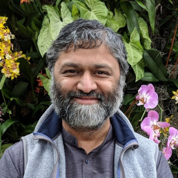
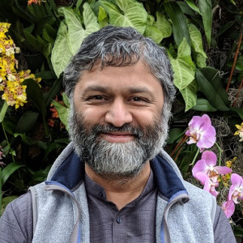

Keynote Speakers
Marcel Worring
University of Amsterdam, NL
Title: Interactive Exploration using Hypergraphs
Abstract: Interactive exploration of a multimedia collection, ranging from search to browsing, requires various tasks to be supported by the system. Categorization, in which each item receives a membership score provides a unifying framework for many of these tasks and with specialized efficient high-dimensional indexing can now interactively be performed even for very large collections. It also provides a proper basis for the notoriously difficult task of evaluating interactive exploration. Categorization is primarily based on the learned features of the items in the collection, possibly implicitly supported by metric learning. It does not explicitly capture the similarity or knowledge-based relations among items in the collection. Hypergraphs generalize graphs by having edges which can connect any number of nodes instead of just two. In doing so they are effectively combining categories and similarity-based relations in one model. Recent advances in graph-convolutional networks bring new opportunities in learning using hypergraphs, predicting a hyperedge membership score capturing both similarity among the elements as well as group membership. In this talk we highlight progress made in hypergraph learning and how it leads to new opportunities for interactive exploration of multimedia content.
Bio: Prof. dr. Marcel Worring is a professor of computer science at the University of Amsterdam. He has a long research history in multimedia. He is co-author of the renowned “CBIR at the end of the early years paper” and 20 years later still intrigued by the challenge of truly interactive methods for multimedia retrieval and the new opportunities that deep learning brings. He has written over 200 papers in the field with a focus on multimedia analytics, combining multimedia analysis, interaction, and visualization to give people insight in large multimedia collections. He is the director of the Innovation Center for Artificial Intelligence – Amsterdam, a center where universities work together with industry and governmental organizations in joint research labs with a span of five years and at least five PhD students. He is co-directing two such labs, one on techniques to support law enforcement and one on medical imaging and in addition has research projects on art and city analytics. He has been associate editor of ACM Transactions on Multimedia, IEEE Transactions on Multimedia and currently is associate editor of IEEE Multimedia. He was co-chair of ACM Multimedia 2016, is program coordinator of ACM Multimedia 2020, and program chair of ACM ICMR 2021.
Divesh Srivastava
AT&T Labs-Research, USA

AT&T Labs-Research, USA

Title: Exploiting Similarity Relationships to Repair Graphs
Abstract: Graphs are a flexible way to represent data in a variety of applications, with nodes representing domain-specific entities (e.g., records in entity resolution; products categories in a taxonomy) and edges capturing a variety of relationships between these entities (e.g., a linkage relationship between records in entity resolution, a category-subcategory relationship between product categories in a taxonomy). Often, the edges in this graph are inferred based on similarity relationships between nodes and are noisy, in that some edges are missing (i.e., real-world relationships that do not have corresponding edges in the graph) and some edges are spurious (i.e., edges in the graph that do not have corresponding real-world relationships). Directly analyzing such graphs can lead to undesirable outcomes, making it important to repair noisy graphs. In this talk, we describe an approach that takes advantage of properties of real-world relationships and their estimated probabilities to ask oracle queries (an abstraction of crowdsourcing) to efficiently repair the noisy graphs. We illustrate this approach for the case of graphs that are unions of cliques (which is the case for entity resolution) and graphs that are tree-structured (which is the case for taxonomies), and present theoretical and empirical results for these cases.
Bio: Divesh Srivastava is the head of Database Research at AT&T Labs-Research. He is a Fellow of the Association for Computing Machinery (ACM), the Vice President of the VLDB Endowment, and on the ACM Publications Board. His research interests and publications span a variety of topics in data management. He received his Ph.D. from the University of Wisconsin, Madison, USA, and his Bachelor of Technology from the Indian Institute of Technology, Bombay, India.
Ilya Razenshteyn
Microsoft Research, USA
Title: Scalable Nearest Neighbor Search for Optimal Transport
Abstract: The Optimal Transport (aka Wasserstein) distance is an increasingly popular similarity measure for structured data domains, such as images or text documents. This raises the necessity for fast nearest neighbor search with respect to this distance, a problem that poses a substantial computational bottleneck for various tasks on massive datasets. In this talk, I will discuss fast tree-based approximation algorithms for searching nearest neighbors with respect to the Wasserstein-1 distance. I will start with describing a standard tree-based technique, known as QuadTree, which has been previously shown to obtain good results. Then I'll introduce a variant of this algorithm, called FlowTree, and show that it achieves better accuracy, both in theory and in practice. In particular, the accuracy of FlowTree is in line with previous high-accuracy methods, while its running time is much faster.
The talk is based on a joint work with Arturs Backurs, Yihe Dong, Piotr Indyk and Tal Wagner. The paper and code is available.
Bio: Ilya Razenshteyn is a senior researcher in the Machine Learning and Optimization group at Microsoft Research Redmond. His research interests span theoretical computer science and machine learning, with a special focus on randomized algorithms and high-dimensional problems. He graduated from Moscow State University in 2012 with a B.S. in Mathematics, and from MIT in 2017 with a PhD in computer science.